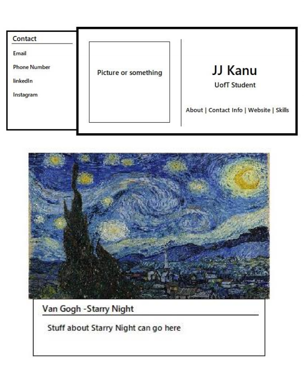

MultiCard
Timeline:
February 2021 - April 2021
Tools:
HTML, CSS, JavaScript
Overview
Regardless of your answer to the question above, you don't have to, I actually did it! MultiCard.js is a front-end JavaScript library where developers can make nested card components with slide transitions in four directions.
Why MultiCard?
The purpose of MultiCard is to allow developers to display clean and minimalist cards, while also giving options to the user to display more information. Developers can simply decide what information they want to be displayed in the main card. This can be a mix of text or even fully minimalistic with just using a picture.
Although JQuery already has a slide effect, it limits a drawer to appear only in the y-direction with the width of the subcard restricted by the parent. MultiCard allows more freedom in this regard with cards being available in both axis and subcards to be larger than their parent.
Planning and Design
What are the use cases?
Several types of web apps that can easily make use of this library. Some examples include:
- Digital business card or credentials
- A simple card with bare information can be displayed, with clicking text on the card activating an associated sub-card
- (This was actually the inspiration for this project!)
- Minimalist store sites can use MultiCards to display items on sale
- The price and name of pieces can pop out of cards upon hover
- Minimalist image galleries
- Information about the art and artist can slide out of the image upon click or hover
Original Mockups

Implementation & Deployment
MultiCard was made using just plain HTML, CSS, and JavaScript without the use of any external libraries. The library page containing API documentation and examples was deployed using Heroku. The library can also be downloaded from a repo available on my GitHub account.
Want to see the library page for yourself?
Check out the deployed link here!
What I Learned
There are a lot of JavaScript libraries available on the internet so the first challenge I faced was coming up with something original. Card components are present in most web pages so I thought to take a different approach to what I card component can accomplish.
In creating MultiCard.js, my main takeaway was the learning and application of DOM manipulation in the browser.